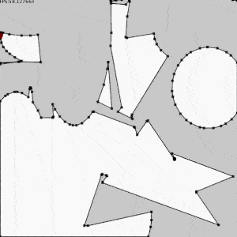

PContour
A Library by Lingdong Huang. Made possible with support from The Frank-Ratchye STUDIO For Creative Inquiry at Carnegie Mellon University for the Processing programming environment, as well as Java.
Last update, 04/11/2020.
Finding contours in binary images and approximating polylines.

Download
Download PContour version 1.0.0 (1) in .zip format.
Installation
Unzip and put the extracted PContour folder into the libraries folder of your Processing sketches. Reference and examples are included in the PContour folder.
Keywords. Computer Vision
Reference. Have a look at the javadoc reference here. A copy of the reference is included in the .zip as well.
Source. The source code of PContour is available at GitHub, and its repository can be browsed here.
Examples
Find a list of examples in the current distribution of PContour, or have a look at them by following the links below.
Tested
Platform osx,windows
Processing 3.2.3
Dependencies None